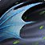
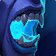

星界转移
90 秒（位面旅行者）· 持续 12 秒
所有伤害 −40%。全本唯一大减伤，专交五处长时间持续伤害，跳伤越长越值。
虚空之痕竞技场的压力来自长时间全团持续伤害：几丁高斯险恶光环、塔兹拉尔空灵冲刺、阿特洛苏斯剧毒光环、残虐者恐惧咆哮与煞戎努斯星辰坠击。元素萨满没有免疫，90 秒星界转移按这几处固定点排开，土元素（始源羁绊，最大生命值 +15%）补空档轮；风剪盯紧熔岩箭、愈体虚空与暗影箭雨，连带门前怪时开尾王前妖术一只野蛮裂爪兽。
四张手牌管住全本，外加一条机制硬限制与五组必断读条。
所有伤害 −40%。全本唯一大减伤，专交五处长时间持续伤害，跳伤越长越值。
配始源羁绊不再嘲讽，改为最大生命值 +15%。补星界空档：塔兹拉尔与煞戎努斯星界冷却中的那一轮。
30 码打断，之后 12 秒受法术伤害 −15%。按队伍分工断下方读条，愈体虚空是引导，起手就断。
成堆小怪的群控补断：几丁高斯区的迅猛龙与三叶虫、虚空区的尖啸者与残虐者堆。
一场 +24 限时实录，摘录主要减伤（展示真实冷却节奏，非每波强制照搬；具体取舍见下方路线）。
看到什么 → 按什么 → 为什么。带「必做」标签的高亮行是每把必做的关键动作。伤害数字是 +24 实测（含被吸收的部分），层数越高越大。


取自 +24 限时录像的元素天赋，英雄天赋先知。复制字符串，在游戏天赋界面点「导入」。
CYQAAAAAAAAAAAAAAAAAAAAAAAAAAAzMbbzMGjZZbZMmhZAAAAgFzsBDYAzGTgZBAmlZmZwGaDzsNzyMmZmxsMLzMLDjZmFAgZAwMjhhB
这四个防御与功能天赋不要动
常见可换：阵风、喷流、静电充能、图腾集中、图腾潮涌、清毒图腾 ↔ 幽魂步、大地之盾、元素环绕、塞拉赞恩的韧性、奥拉基尔之风、治疗链。